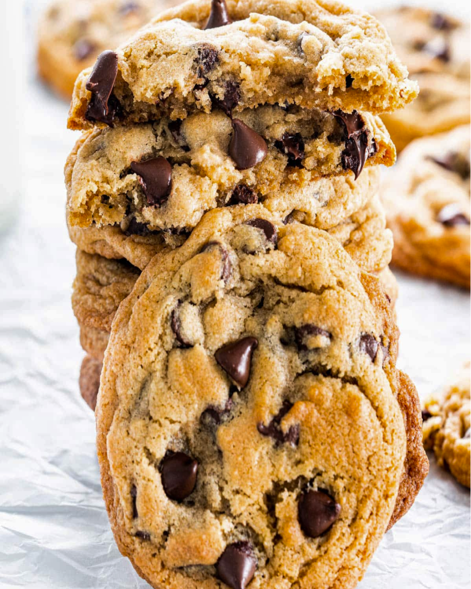

Chocolate Chip Cookies

These cookies are golden on the edges, soft in the middle, and loaded with chocolate. A classic that never goes out of style!
 Makes 24-30 cookies depending on size
Makes 24-30 cookies depending on size
 Prep Time 30 mins
Prep Time 30 mins
 Cook Time 15 mins
Cook Time 15 mins
Ingredients
- 3 cups all-purpose flour
- 1 tsp baking soda
- 3/4 tsp salt
- 1 cup softened unsalted butter
- 1 cup brown sugar
- 1 cup white sugar
- 2 eggs
- chocolate of your choice
Instructions
Firstly, in a medium bowl, whisk together the flour, baking soda, and salt until evenly combined. Set aside.
Next, in a separate large bowl, use an electric mixer to cream the softened butter with the brown sugar and white sugar until the mixture becomes light, fluffy, and pale brown.
Add the eggs one at a time, mixing well after each addition until fully incorporated.
Gradually add the dry ingredients to the wet mixture, mixing on low speed until just combined. Be careful not to overmix.
Once combined, fold in the chocolate chips, adding as many as you like! Feel free to customize your cookies with other mix-ins, such as chopped nuts, M&Ms, or white chocolate chips.
Cover the dough and chill in the refrigerator for at least 30 minutes (or up to overnight) for the best texture.
Preheat your oven to 350°F. Scoop rounded tablespoons of dough onto a lined baking sheet, leaving space between each cookie.
Bake for 12–15 minutes, or until the edges are golden brown. Let the cookies cool on the baking sheet for a few minutes before transferring them to a wire rack. Enjoy!